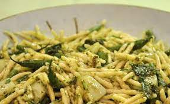

Trofie al pesto recipe

Recipe description:
Main ingredients:
Ingredients
Amount
Trofie pasta
200 gramms
Salt
1 teaspoon
Pesto sauce
150 ml
Cooking steps:
Put the pasta in boiling water and cook al dente.
Put the pasta into a pan on low-medium heat while mixing in the sauce.
Once the sauce covers the pasta serve it is ready to be served.
Additionally add cheese or pepper on top of it.